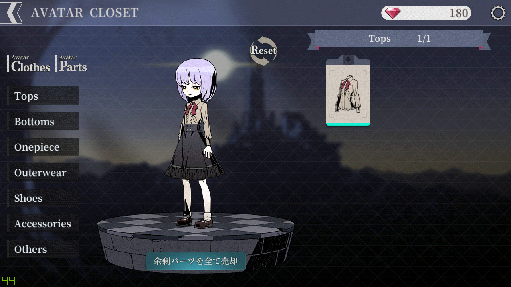

-

아바타를 꾸미는 법에 대해 알아봅니다.

상점과 동일한 인터페이스를 가지고 있습니다.
"Clothes" 또는 "Parts"를 눌러 탭들을 펼칠 수 있습니다.
착용 중인 아이템을 클릭하면 벗겨집니다.
반대로 착용하려는 아이템을 클릭하면 입혀집니다.
미리보기 아래의 "잉여 파츠를 전부 매각" 버튼을 눌러 중복된 아이템을 자동으로 없앨 수 있습니다.
※ 위의 스크린샷은 잉여 파츠가 없어 "잉여 파츠가 없습니다"라는 문구가 뜬 경우입니다.
-
이상으로 하위메뉴 []편을 마칩니다.
하위메뉴 []편으로 내용이 이어집니다.